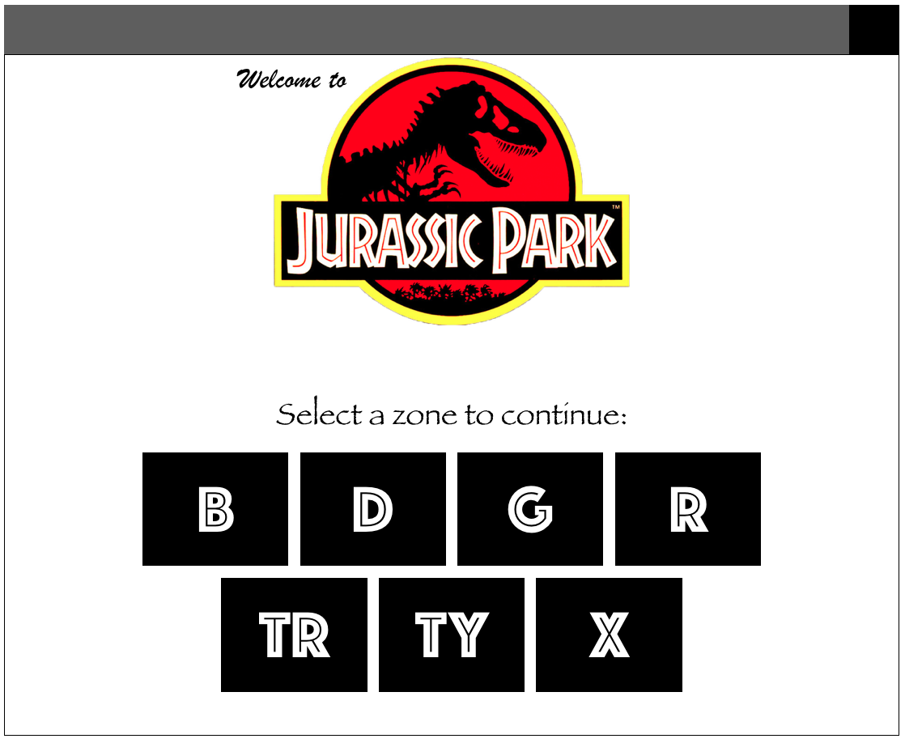

UTSA CS 3443: Application Programming
Lab 5
Objectives:
- JavaFX
- Exception handling
- Collections: HashMap
Task: A GUI For Jurassic Park
Mr. Hammond's park is about to open! (Seriously though, what are they thinking?...)
His technical staff is a little tied-up right now, so he'd like to hire you for version 3.0 of their software - congrats!
Your application will read in data from text files placed in a data directory.
Sample files can be downloaded as a zip file here - unzip it and place the folder with files in your project in Eclipse.
In this version, they will reuse the data files and information previously provided, but would like a user interface for easier access.
Getting Started
To begin this lab, create a new JavaFX project named abc123-lab5, and create the following packages, classes, and FXML files:
- application.Main
- application.controller.MainController
- application.controller.ZoneController
- application.model.Dinosaur
- application.model.Park
- application.model.Zone
- application.view.Main.fxml
- application.view.Zone.fxml
App Design
Your program will show a view similar to the one shown below when the app is run:

This view will be the Main.fxml.
When the user clicks on one of the seven buttons, the app will display a GUI similar to the following:
This view will be the Zone.fxml.
The "Home" button should return the user to Main.fxml.
If the user enters information to relocate a dinosaur (in this example, "Tyrion and X") and clicks the "relocate" button,
the app will update this view as follows:
It's officially time to get creative!
You may choose the images, fonts, colors, app size, and any other style features.
Use this opportunity to learn about background colors, good user design, or any aspects that might be useful to your team project.
The above views are minimal examples of the requirements for the lab - your submission must reflect all GUI components shown.
This includes labels, textfields, buttons, two radio buttons (grouped), and a list view.
Use the data files provided in Lab 2.
GUI Hints:
Read about the JavaFX RadioButton class.
Review lecture slides and read about the JavaFX ListView class.
Making it Work
Main.java will launch the application and show Main.fxml.
MainController.java will be the EventHandler for this fxml, and should be connected to all buttons in this view.
There will be only 7 zones in Jurassic Park, as given in the data files previously.
These will not change - no zones added, removed, or modified.
The dinosaurs in each zone will change however.
The ZoneController class will be the event handler for Zone.fxml.
When this view is loaded, the zone name, code, threat level, and number of dinosaurs will be displayed.
In addition, a list of all dinosaurs will be shown to the user.
Hint: use the toString from your Dinosaur class to populate the data needed for this list.
The user may add a new dinosaur to this zone by typing in a name, dinosaur type,
and selecting one of the two radio buttons corresponding to whether or not the dinosaur is carnivorous.
When the user clicks the "add" button, the following should happen:
- The name and type fields should be cleared
- A message should display under the add area indicating whether or not the add was successful.
- The number of dinosaurs should be updated
- The list of dinosaurs should display the new dinosaur's information
The user may relocate a dinosaur from this zone by typing in a name and entering a zone code (e.g. "TY")
When the user clicks the "relocate" button, the following should happen:
- The name and zone code fields should be cleared
- A message should display under the relocate area indicating whether or not the relocate was successful.
- The number of dinosaurs should be updated
- The list of dinosaurs should be updated (remove the dinosaur's information)
Note that if a dinosaur is relocated, we should be able to open the zone to which they were moved and view that dinosaur's information.
(In the example given, open zone X and Tyrion the Tyrannosaurus should display in the list of dinosaurs.)
Saving
The user of our app will expect that changes made will persist after they close and reopen the app.
In our given example, if the user closes the app after relocating Tyrion to zone X, then when they reopen the app he will still be in zone X.
This means that upon adding and relocating dinosaurs, you will need to call upon the save method previously implemented.
As always, the app should maintain one stage only.
The app must use FXML for the views, and follow MVC design pattern.
Model classes must be responsible for the data of this application, and controller classes will call upon methods in the model classes in order to
complete the tasks identified above.
The Model
While you can (and should!) reuse your code from the previous labs, note that the changes Hammond is requesting will require significant changes to the classes.
The model of this application will be Dinosaur.java, Park.java, and Zone.java.
In addition to the following requirements, you may need other methods to get your application working.
Park
The Park class will be as previously defined, however it will contain a HashMap, instead of the previous collections.
The key to the HashMap will be Zone objects.
The value for each key will be an ArrayList of Dinosaur objects.
Include:
- Class variables for: HashMap, name of the park
- Constructor
- relocate(..) method
- save() method
- toString() method
- loadZones(..) and loadDinosaurs(..) methods (note that these will need to be updated!)
Zone
The Zone class will no longer need to keep track of a collection of dinosaurs - remove the class variable and corresponding methods.
Include:
- Class variables for: name of zone, zone code, threat level
- Constructor
- toString() method
Dinosaur
The Dinosaur class will be as previously defined, but will not need to keep track of their zone code (no class variable).
Include:
- Class variables for: name of dinosaur, type of dinosaur, carnivorous indicator (true/false)
- Constructor
- toString() method
Model Reminders
All model classes must have getters and setters for all of their class variables.
Constructors in these classes must initialize these variables.
For example, if a class has a String name variable, then the constructor must take a String parameter to initialize the name.
All collections must be initialized as well, however they will not be passed as parameters.
Instead, the constructor will initialize them as a new empty collection.
User Input & Exception Handling
In Lab 7, you will be asked to update this application to handle exceptions properly and manage user input.
Your responsibilities in Lab 6 are to ensure feedback is displayed to the user as described in the sections above, and to ensure the app does not crash.
Note that in all GUI applications, the user must not be expected to view the console in order to receive feedback!
Rubric:
- (25pts) Correctness - app functions as described. Your submission will be tested by running the app and assessing the output.
- (10pts) MVC - app is implemented as described, and therefore adheres to the MVC design pattern.
- (10pts) Main
- (15pts) HashMap
- (20pts) ZoneController
- (10pts) UML Diagram (includes fxml)
- (10pts) Comments - Javadoc comments on all classes (does not include fxml)
Submissions which do not compile will receive a maximum of 10 points total.